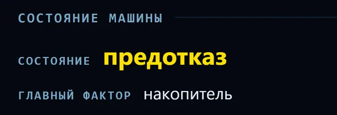

Сеть
Карта узлов и связей по SNMP, LLDP, CDP и по данным агентов; провод и Wi-Fi, уверенность каждой связи; журнал изменений и снимок топологии каждый час; выгрузка PNG и CSV. В демо — 16 узлов и 25 связей.
J-Space принимает телеметрию с каждого Windows-ПК, принтера и узла сети, ведёт учёт, считает статистику и прогнозы и заранее показывает, где пора скорректировать курс. Работает на вашем сервере, в вашей сети.
или снимок экранов
Настоящий сервер J-Space с демо-парком: 10 компьютеров, 3 принтера, 16 узлов сети, 45 дней истории. Стенд работает только на чтение, так что смело нажимайте всё. После паузы стенд просыпается чуть дольше.
Демо-парк сейчас: полёт нормальный — 4 · ранние признаки — 3 · коррекция курса — 3.
Схема демо-парка, время ускорено: в жизни телеметрия приходит при включении и каждые 4 часа, сигнал связи — каждые 5 минут.
На каждом Windows-ПК работает лёгкий агент J-Space на чистом Python. При включении и затем каждые 4 часа он отправляет на ваш сервер пять пакетов телеметрии, а каждые 5 минут — короткий сигнал связи. Сбор идёт через CIM и числовые коды событий, поэтому русская и английская Windows дают одинаковые результаты.
SMART — 21 атрибут ATA, флаг предсказания отказа, журнал здоровья NVMe, износ SSD, наработка, температура, задержки чтения и записи p50/p95.
Внезапные перезагрузки Kernel-Power 41, аварийные выключения 6008, BSOD, сбои приложений, аппаратные ошибки WHEA, индекс стабильности Windows, время загрузки.
Загрузка процессора и троттлинг, свободная память, файл подкачки, свободное место на системном диске, дескрипторы.
Модель, процессор, модули памяти, диски, BIOS, версия и дата установки ОС, проблемные драйверы, ожидающая перезагрузка.
Сроки действия из хранилищ компьютера и пользователей.
Адаптеры, Wi-Fi и уровень сигнала, задержка и потери до шлюза и DNS, соседи по локальной сети.
Каждое задание — принтер, страницы, пользователь.
Сервер опрашивает сам: по SNMP каждые 15 минут — тонер, барабан, счётчики страниц; LLDP, CDP и таблицы коммутаторов для карты сети.
| накопитель | WDC WD10EZEX · 1 ТБ HDD |
|---|---|
| SMART 5 переназначено | 124 |
| SMART 197 в ожидании | 18 |
| SMART 198 сбойные сектора | 6 |
| температура | 44 °C |
| наработка | 41 740 ч |
| чтение p95 задержка | 188 мс |
| прошивка | сигнал о скором отказе |
Бережно к данным. Серийные номера дисков превращаются в хеш SHA‑256 ещё на компьютере, из адресов передаются только частные диапазоны локальной сети (RFC1918), у сертификатов — только сроки действия. Вся телеметрия хранится на вашем сервере.
Достоверность. Каждый источник проходит проверку — свежесть, допустимые диапазоны, согласованность счётчиков. В выводы попадают только проверенные данные, а полнота данных видна на экране в процентах.
Открыть внутренности сервераJ-Space хранит историю и превращает её в учёт: дневные сводки — 2 года, задания печати — 400 дней, события — 90 дней, подробные показатели — 30 дней. Сроки хранения настраиваются.
Карточка каждой машины: модель, процессор, память, диски со SMART, BIOS и ОС, проблемные драйверы.
Карточка BUH-02
Каждое задание: компьютер, принтер, страницы, пользователь, отдел; аналитика по дням, принтерам, пользователям и отделам; две выгрузки в CSV. В демо-парке за 45 дней — 12 680 страниц, в среднем 282 в день.
Модель, серийный номер, счётчики страниц (цвет, ч/б, дуплекс), расходники и лотки — по SNMP, IPP и HTTP; профили HP, Canon, Kyocera, Ricoh, Xerox, Brother, Epson, Lexmark.
| модель | страниц всего | тонер |
|---|---|---|
| HP LaserJet M428 | 124 650 | 9 %закончится примерно через 3 дня |
| Kyocera M2040dn | 345 000 | 55 % |
| Canon iR C3226 | 218 300цвет 63 100 · ч/б 155 200 | C 18 / M 44 / Y 61 / K 70 % |
Карта узлов и связей по SNMP, LLDP, CDP и по данным агентов; провод и Wi-Fi, уверенность каждой связи; журнал изменений и снимок топологии каждый час; выгрузка PNG и CSV. В демо — 16 узлов и 25 связей.
PROD-01износ SSD
89%
0 %100 %
Износ SSD 89 %, предел примерно через 97 дней.
HP LaserJet M428тонер
9%
0 %100 %
Тонер 9 %, хватит примерно на 3 дня.
KADRY-01свободно на диске
2,6%
0 %100 %
На системном диске 2,6 % свободного места, пора освободить место, чтобы обновления Windows устанавливались спокойно.
J-Space считает тренды устойчивыми методами — наклоном Тейла–Сена с проверкой значимости Манна–Кендалла — и ставит дату там, где у ресурса есть физический предел: износ SSD до 100 %, свободное место на системном диске до 5 %, тонер до нуля.
Машина сдаёт постепенно, и J-Space видит каждую ступень: здоров, ранняя деградация, компенсация, ускоренная деградация, предотказ. Для трёх последних он назначает срок реакции — 90, 30 и 7 дней, или раньше, если прогноз ресурса короче, — и подсказывает действие: снять образ данных, освободить место, перезагрузить, заменить накопитель.
У BUH-02: 100 · 15 · 90.
индекс здоровья за 45 дней, данные рабочего стенда
Парк вымышленный, история телеметрии настоящая: те же цифры живут на рабочем стенде.
| Вопрос | Классический мониторинг | J-Space |
|---|---|---|
| Главный вопрос | Что сломано прямо сейчас | Какая машина начала сдавать и сколько времени на реакцию |
| Как срабатывает | По порогу: диск заполнен на 90 % | По тренду и его значимости, заранее |
| Оценка машины | Одно число или набор графиков | Пять состояний и три координаты |
| Качество данных | Берёт данные как есть | Проверяет достоверность каждого источника |
| Что ставится на ПК | Агент с зависимостями или опрос извне | Агент на чистом Python и PowerShell 5.1 |
Всё это живёт на рабочем стенде: сортировки, переход в карточку машины, выгрузка CSV.
J-Space разворачивается на вашем сервере с Windows или Linux, хранит всё в одном файле SQLite и спокойно встраивается в существующую инфраструктуру.
\\сервер\srp$ и одна команда setup.exe с кодами возврата для GPO и RMM; страница /deploy готовит строки установки для каждой организации и отдела./api/v1 — машины, метрики, печать, принтеры, карта сети; выгрузки CSV и PNG.backup.bat.srp-server-free.zip, распакуйте и запустите install-server.bat (нужен Python 3.9 или новее).srp-setup-free.exe от администратора и укажите адрес сервера.http://адрес-сервера:8000 — данные приходят в первые минуты после установки.J-Space развивается как исследовательская программа: сначала измерения, потом выводы. Каждый следующий этап стартует, когда накоплены данные для честной проверки.
J-Space — система телеметрии, учёта и раннего предупреждения для компьютерного парка организации: Windows-ПК, принтеры и сеть на одном экране. Она работает на вашем сервере, код открыт по лицензии MIT.
При включении компьютера и затем каждые 4 часа агент отправляет пять пакетов телеметрии, а каждые 5 минут — сигнал связи. Принтеры сервер опрашивает сам каждые 15 минут, доступность сети — каждые 10 минут, топологию — раз в час.
Дату он ставит там, где у ресурса есть физический предел: износ SSD до 100 %, свободное место на системном диске до 5 %, тонер до нуля. Для состояния машины он назначает срок реакции — 90, 30 или 7 дней, или раньше, если прогноз ресурса короче, — и пишет, что сделать.
Они отлично дополняют друг друга: Zabbix по порогам сообщает, что сломано сейчас, а J-Space по тренду и истории показывает, какая машина начала сдавать и сколько времени на реакцию. Вердикт J-Space приходит в Zabbix четырьмя значениями на компьютер.
На вашем сервере, в одном файле SQLite. Серийные номера дисков хешируются ещё на компьютере, из адресов передаются только частные диапазоны, у сертификатов — только сроки действия.
Да, и это проверено на живых машинах: агент читает счётчики через CIM и разбирает числовые коды событий, а установщик назначает права по идентификаторам групп. Результат одинаков на любом языке системы.
Сервер на Windows или Linux с Python 3.9 или новее; на компьютерах — Windows 10 или 11 и права администратора для установки агента. Демо-версия доступна свободно: до 3 компьютеров, открытый код под лицензией MIT, проект развивается на добровольные взносы.
Рабочий стенд — запущенный сервер J-Space с демо-парком: всё нажимается, цифры считает настоящий движок; после паузы первая страница открывается чуть дольше. Снимок экранов — 36 страниц того же дашборда прямо на этом сайте: открываются мгновенно. Парк один: 10 компьютеров, 3 принтера, 16 узлов сети, 45 дней истории.
J-Space создаёт инженер, который сам ведёт парк офисных компьютеров и знает цену утреннего звонка «у меня всё зависло». Проект открытый и развивается на добровольные взносы: каждый взнос превращается во время — разбор присланных ошибок, поддержку новых моделей принтеров и сетевого оборудования, проверку сборок на живом парке.
Отсканируйте код или откройте ссылку. Любая сумма помогает.
Вопросы о внедрении — mss777@mail.ru.
10 компьютеров, 3 принтера, 45 дней истории, вход свободный.